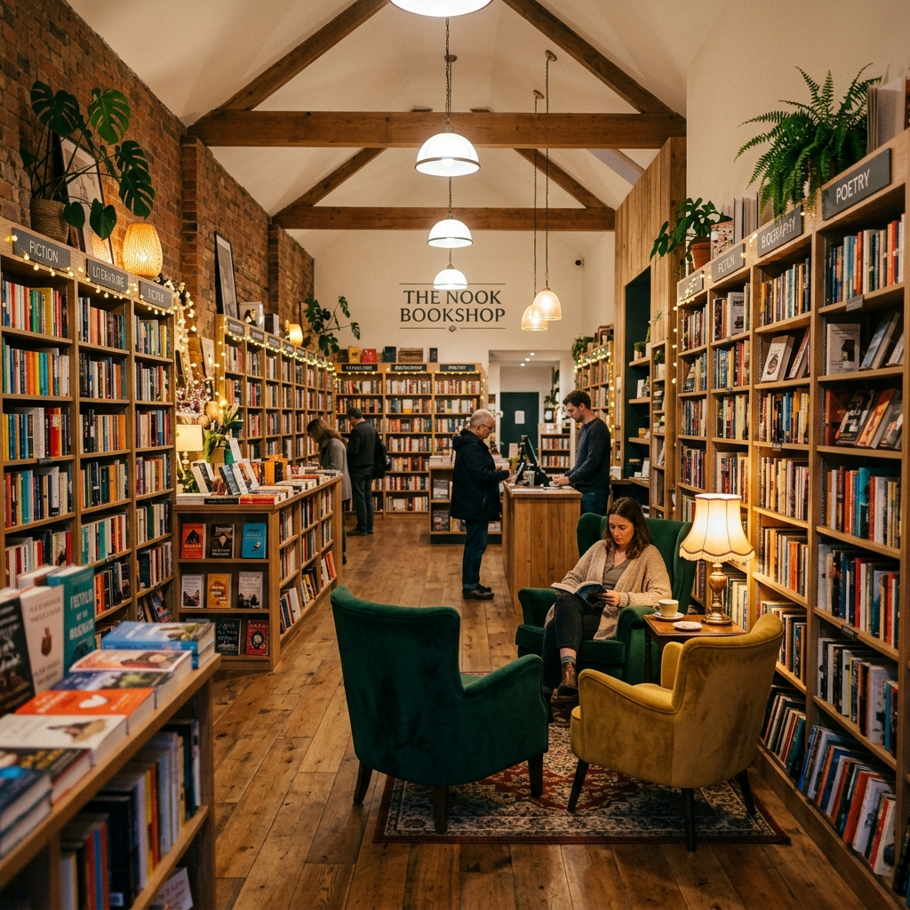

Founder & Literary Director
Aurelia Sterling
Aurelia opened The Shelf in 1985 with a vision to celebrate literary voices and build a cozy sanctuary for book discovery.
We began with a simple belief: that books are the ultimate conduits of human connection. Over the last four decades, The Shelf has evolved from a single room of wood shelves into a sanctuary for curious minds, where reading is celebrated as a shared experience.
Cultivating literary sanctuary since day one


The Shelf was born out of a profound passion for books and community culture. In 1985, we set out to build a space that was the antithesis of the cold, commercial chains—a place where readers could talk, share recommendations, and feel a sense of belonging.
By supporting local readers and building literary connections, we have spent four decades bringing people together around the transformational power of written word.
Opening our humble boutique in a quiet London side-street with only 500 handpicked titles.
Moving to our current multi-story home, introducing reading alcoves, and launching our community club.
Blending our physical bookstore with digital paths, ensuring curated recommendations reach readers everywhere.
We are dedicated to helping readers discover meaningful books that expand perspectives and feed curiosities. By championing independent publishing houses, supporting local authors, and encouraging lifelong learning, we aim to preserve the value of slow reading in a fast-paced digital age.
Our vision is to build stronger, more empathetic reading communities by making outstanding literature and writing accessible to all. We strive to inspire future generations of writers and readers, ensuring independent bookshops remain vital cultural landmarks of intellectual life.
We place careful curation and genuine human interaction at the center of everything we do.
Every single book on our shelves has been intentionally selected. We choose quality over volume to provide absolute discovery.
We actively seek out translations, small indie presses, and self-published local authors who deserve to be read.
No algorithms here. Our booksellers match books to your current mood, style, and literary preferences.
From cozy poetry evenings and panel debates to kids' storytelling groups, we create a lively hub for book lovers.
Our booksellers, planners, and curators are dedicated to building a welcoming space for your reading journeys.
Aurelia opened The Shelf in 1985 with a vision to celebrate literary voices and build a cozy sanctuary for book discovery.
Marcus creates our calendar of events, panels, and monthly book clubs, ensuring a lively space for book lovers.
Saritha coordinates our collections, searching out indie presses, emerging authors, and custom editions.
Edward manages our floor and custom suggestions service, helping every customer find their next favorite book.